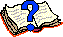
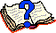

Your Results
You have answered
of the 11 questions correctly.
-
Question 1
(The man on the painting)
-
Question 2
(Drawer with socks)
-
Question 3
(Knights, Knaves and Normals)
-
Question 4
(Color of the bear)
-
Question 5
(Numbers 9)
-
Question 6
(Inhabitants of Veldhoven)
-
Question 7
(Milk and water mixture)
-
Question 8
(Alice, the Lion and the Unicorn)
-
Question 9
(Cretan Liars)
-
Question 10
(Knights, Knaves and Normals)
-
Question 11
(Estimate your score)
![[BACK]](left.gif) back to the main puzzle page.
back to the main puzzle page.

Question 1
A man is standing in front of a painting of a man, and he tells us the following: "Brothers and sisters have I none, but this man's father is my fathers son". Who's on the painting?
The Solution: His son
An Explanation
We can replace "my fathers son" by "myself" since he is the only
child. Now remains: "This man's father is myself", so this man is his son.
![[UP]](back.gif) back to index
back to index
Question 2
It is dark in my bedroom and I want to get two socks of the same color from my drawer, which contains 24 red and 24 blue socks. How many socks do I have to take from the drawer to get at least two socks of the same color?
The Solution: 3
An Explanation
It is clear that taking 0, 1, or 2 socks is not sufficient. But if you take
3 socks, then either the first and second sock you take have the same color,
or the third sock you take from the drawer has the same color as one of the
previous two.
back to index
Question 3
Imagine you are on an island called Texel, with inhabitants that look the same from the outside, but differ from inside (their truthfulness). We distinguish the following types: - Knights, who always tell the truth.
- Knaves, who never tell the truth.
- Normals, who sometimes tell the truth and sometimes lie.
Assume you meet one of these inhabitants, and he tells you: "I'm no Knight". Then, of what type is inhabitant?
The Solution: Normal
An Explanation
A Knight cannot make the statement "I'm no Knight", since this would be
a lie and a Knight always tells the truth. A Knave could also not make the
statement, since that would be a true statement, and a Knave never tells the
truth. A Normal however can say "I'm no Knight". It's true, and Normals
sometimes tell the truth.
back to index
Question 4
A hunter leaves his cabin early in the morning and walks one mile due south. Here he sees a bear and starts chasing it for one mile due east before he is able to shoot the bear. After shooting the bear, he drags it one mile due north back to his cabin where he started that morning. What color is the bear?
The Solution: White
An Explanation
He can walk one mile due south, then one mile due east and finally one mile
due north where he finds his cabin again. This means that his cabin can
only be at the north pole, and for that reason the bear will be white.
back to index
Question 5
A certain street contains 100 buildings. They are numbered from 1 to 100. How many 9's are used in these numbers?
The Solution: 20
An Explanation
Just count the nines in the numbers: 9, 19, 29, 39, 49, 59, 69, 79, 89,
90, 91, 92, 93, 94, 95, 96, 97, 98, 99.
Note: 99 contains TWO nines!
back to index
Question 6
In a city called Veldhoven the following facts are true: - No two inhabitants have exactly the same number of hairs.
- No inhabitant has exactly 40360 hairs.
- There are more inhabitants than there are hairs on the head of any one inhabitant.
What is the largest possible number of inhabitants of Veldhoven (knowing that the number of inhabitants is not infinite)?
The Solution: 40360
An Explanation
To prove that the largest possible number of inhabitants of Veldhoven is
40360, we first prove that Veldhoven can have 40360 inhabitants, and
secondy that Veldhoven cannot have a larger number of inhabitants.
Assume that Veldhoven has 40360 inhabitants, and that the inhabitants
are numbered from 0 up to 40359. Further, assume that the number of hairs
of each inhabitant is equal to his/her number. Then all three mentioned
facts about Veldhoven are true. So it is possible that Veldhoven has 40360
inhabitants.
Now assume that Veldhoven has more than 40360 inhabitants. Number them
again from 0 onwards. And assume that the number of hairs
of each inhabitant is equal to his/her number, except for
inhabitant 40360 (because of the second fact). Now, whatever number of hairs
this inhabitant 40360 has, it always violates either the first or the
third fact. So Veldhoven cannot have more than 40360 inhabitants.
back to index
Question 7
Consider two cans, the first containing one liter of milk and the second containing one liter of water. Suppose you take one cup of milk out of the first can and pour it into the second can. After mixing you take one cup of the mixture from the second can and pour it back into the first can. Which one of the following statements holds now?
The Solution: There is as much water in the first can as there is milk in the second can.
An Explanation
In the end, both cans contain again one liter of liquid each. So the amount
of milk that is replaced by water in the first can (which is somewhat less
than one cup!) equals the amount of water
that is replaced by milk in the second can (it is just an equal exchange).
For those who still don't believe we have also a mathematical proof:
Let the cup have contents c.
We start with 1 liter of milk and 1 liter of water:
first can: second can:
1 milk 0 milk
0 water 1 water
We take one cup of milk, pour it into the second can, and mix it. The result is:
first can: second can:
1-c milk c milk
0 water 1 water
The concentration of milk in the second can is c/(1+c);
the concentration of water in the second can is 1/(1+c).
We now take one cup of the mixture in the second can and pour it back into
the first can. This cup contains c x c/(1+c) milk and
c x 1/(1+c) water. The result is:
first can: second can:
1-c + (c x c/(1+c)) = 1/(1+c) milk c - (c x c/(1+c)) = c/(1+c) milk
0 + (c x 1/(1+c)) = c/(1+c) water 1 - (c x 1/(1+c)) = 1/(1+c) water
So now there is as much water in the first can as there is milk in the
second can.
back to index
Question 8
One day Alice meets the Lion and the Unicorn in the Forest of Forgetfulness. She knows that the Lion lies on Mondays, Tuesdays, and Wednesdays, and tells the truth on the other days of the week. The Unicorn, on the other hand, lies on Thursdays, Fridays, and Saturdays, but tells the truth on the other days of the week. Now they make the following statements to Alice: - Lion: Yesterday was one of my lying days.
- Unicorn: Yesterday was one of my lying days too.
What day is it?
The Solution: Thursday
An Explanation
The only days the Lion can say that he lied on the previous day are Mondays
and Thursdays. The only days the Unicorn can say this, are Thursdays and
Sundays. Therefore, the only day they both say that is on Thursday.
back to index
Question 9
A Cretan named Epimenides once said to a fellow Cretan: "All Cretans are liars". Assuming that a liar always lies and someone who is not a liar always tells the truth, which of the following statements is true?
The Solution: Epimenides is a liar.
An Explanation
Assume that Epimenides is not a liar. Then he always tells the truth, and
hence his statement 'All Cretans are liars' is true. From this, it follows
that Epimenides is a liar (since he is a Cretan), which contradicts with the
assumption that Epimenides is not a liar.
We conclude that Epimenides is a liar. Therefore, the statement he made
is false. This means that not all Cretans are liars, i.e., there must be at
least one Cretan who is not a liar. Given the fact that Epimenides is not the
only Cretan (he spoke to a fellow Cretan), this does not give any further
contradictions.
Final conclusion: the Cretan Epimenides is a liar and at least one other
Cretan is not a liar.
Now there might seem to be a problem if there is only one fellow Cretan,
who is also a liar.
Or in general: if all fellow Cretans of Epimenides are liars.
But this is no problem at all!
We know that Epimenides is a liar.
Assume that all fellow Cretans of Epimenides are liars.
Then Epimenides's statement would be true.
But that contradicts with the fact that Epimenides is a liar.
From this, we conclude that the assumption (that all fellow Cretans of
Epimenides are liars) is not true.
In other words: not all fellow Cretans of Epimenides are liars,
which means that there is at least one fellow Cretan who is not a liar.
back to index
Question 10
Recall the island Texel with its inhabitants: Knights (who always tell the truth), Knaves (who always lie) and Normals (who sometimes lie and sometimes tell the truth). On this island, a man and a woman may only marry in case they are both Normal, or one of them is a Knight and the other one is a Knave. Now you meet Mr. and Mrs. A who tell you the following: - Mr. A: "My wife is not normal"
- Mrs. A: "My husband is not normal"
What types of persons are Mr. and Mrs. A?
The Solution: They are both Normal.
An Explanation
As stated in the question, the man and a woman may only
marry in case they are both Normal, or one of them is a Knight and the other one
is a Knave. So, there are only three possibilities: they are both Normal, or Mr.
A is a Knight and Mrs. A is a Knave, or Mr. A is a Knave
and Mrs. A is a Knight.
Assume Mr. A is a Knight and Mrs. A is a Knave. Then both tell the truth,
which is impossible since Mrs. A should always lie.
Assume Mr. A is a Knave and Mrs. A is a Knight. Then again both tell the truth,
which is impossible since now Mr. A should always lie.
The only remaining possibility is that both Mr. A and Mrs. A are Normal.
back to index
Question 11
How many of the previous questions have you answered correctly?
The Solution:
An Explanation
You answered
of the previous questions correctly.
back to index
Copyright © 1996-2005. RJE-productions. All rights reserved.